This task has two objectives. The first is to clarify the problem you are trying to solve by producing a final Problem Statement. The second objective is to explore how you will solve the problem identified in your Problem Statement through brainstorming, paper sketching and user flows.
Low-Fidelity Prototyping _ Feature 1 _ UI/UX
Navigating in “Dashboard”
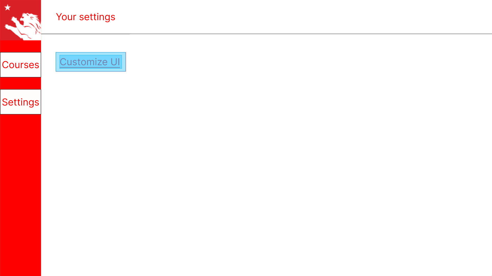
After opening setting tap
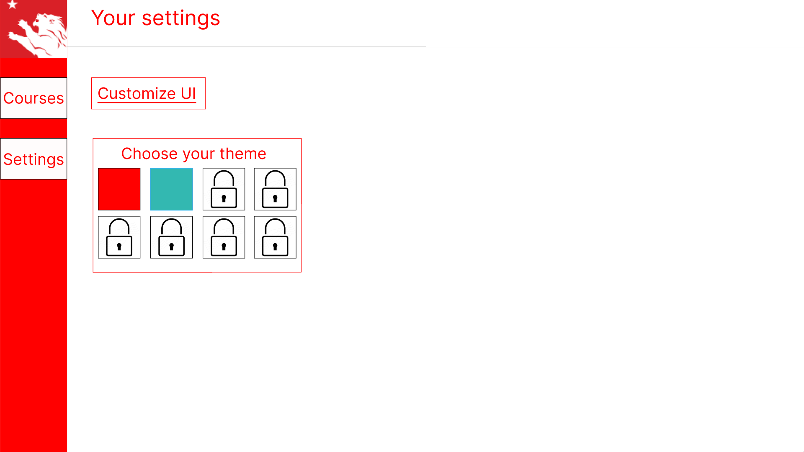
After clicking on "Customize UI"
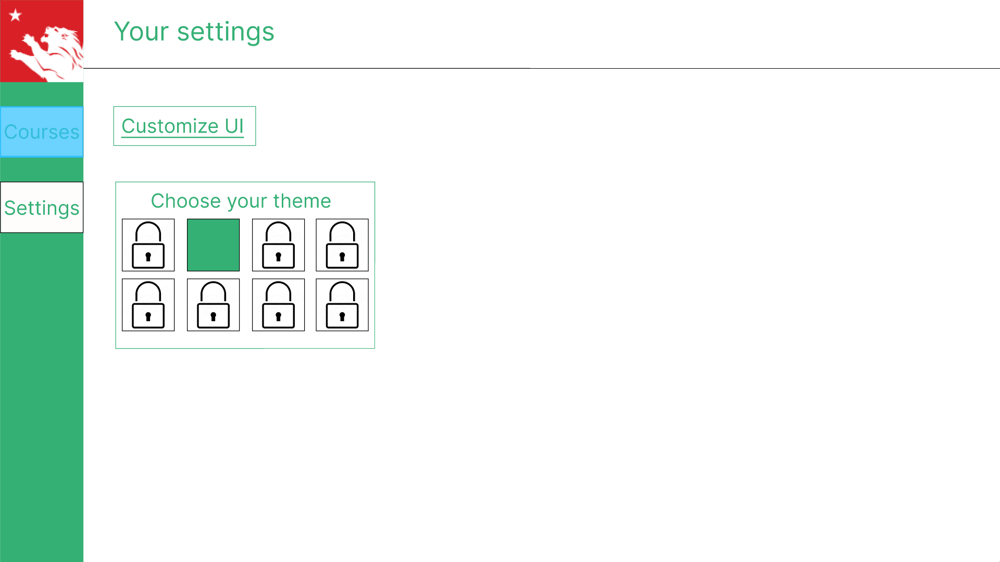
After successfuly change the color of UI
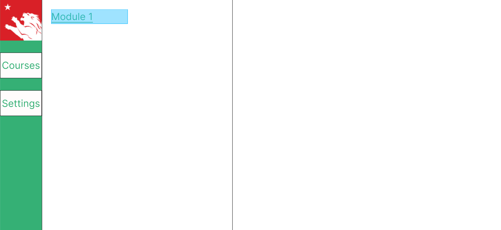
Moved to "Courses" tap. There is "Module 1" available. Click on "Module 1" to see its details
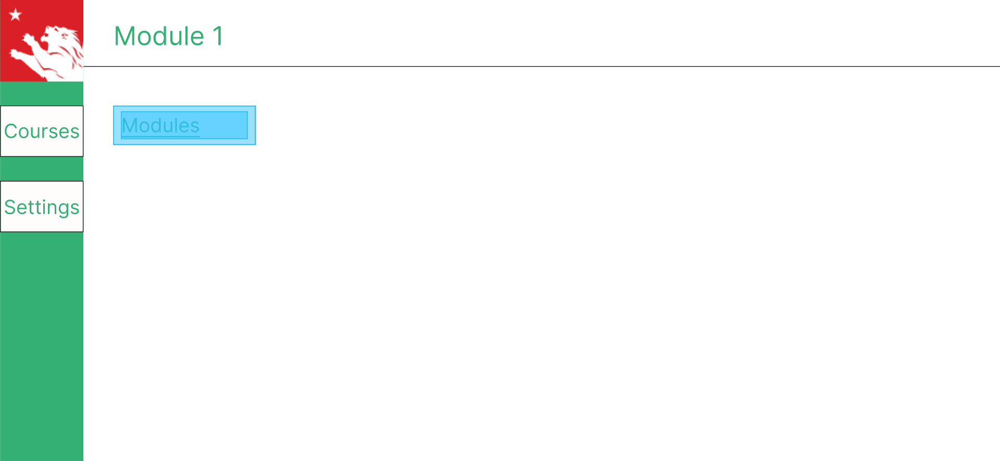
Click on "Modules" to "Module 1" files
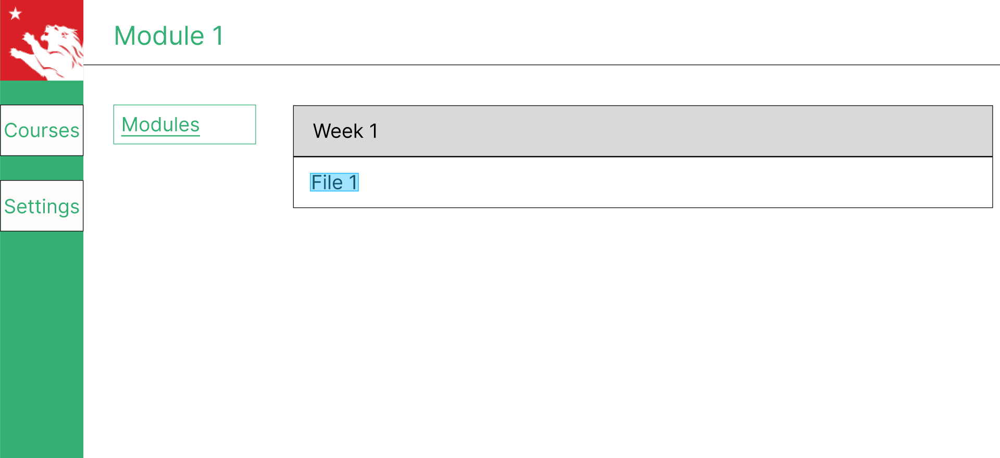
Successfully view "Module 1" files. "File 1" is available. Hover on "File 1" to see its preview
Click on "File 1" to see its full content
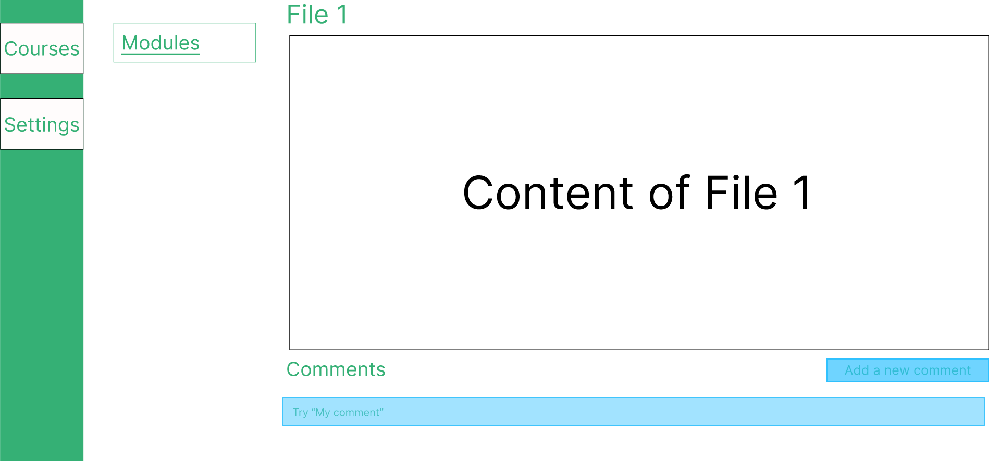
Type in the "Comments" text box and click "Add new comment" to post the comment
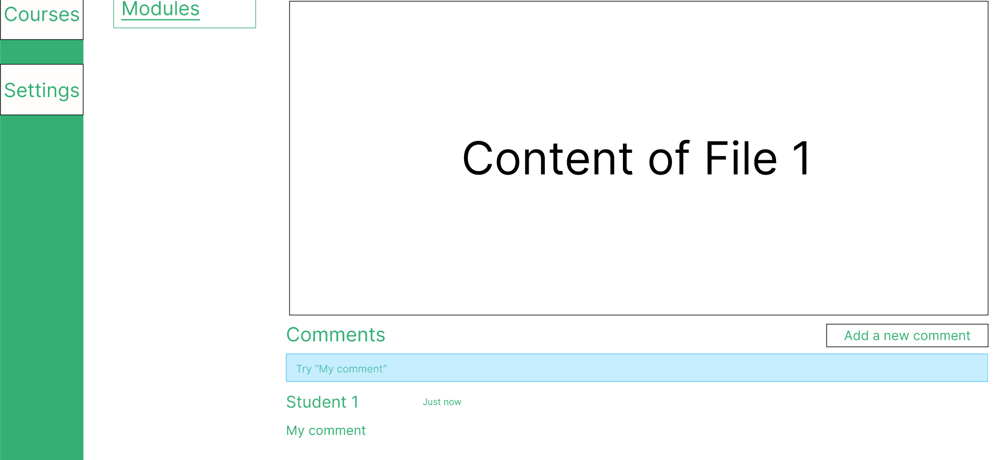
Comment is successfully posted
Low-Fidelity Prototyping Feature 2 _ Discussion
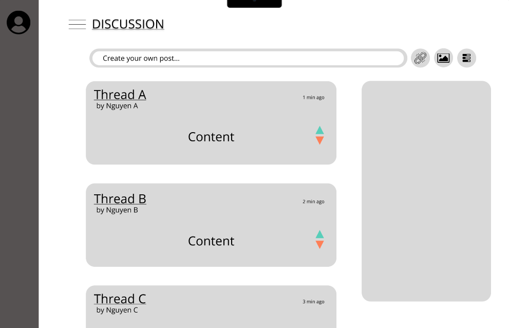
Click on “Thread A” to see its full content
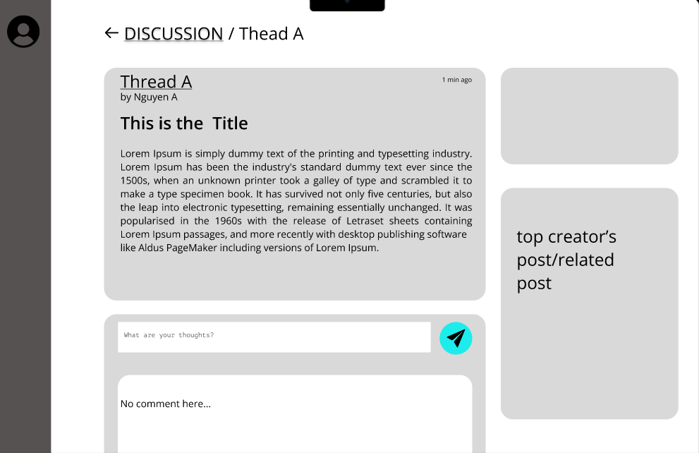
“Thread A” full content. Type in text box and click post
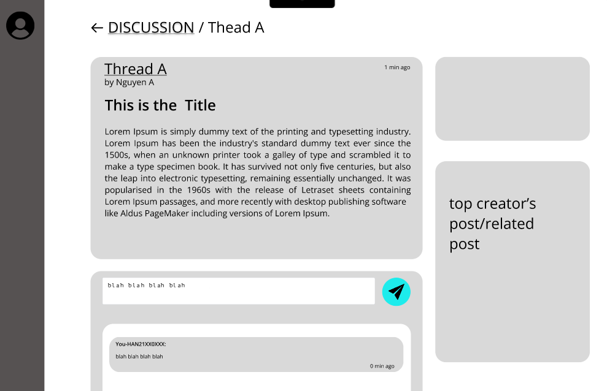
Comment is posted. Going back to “Discussion” tap
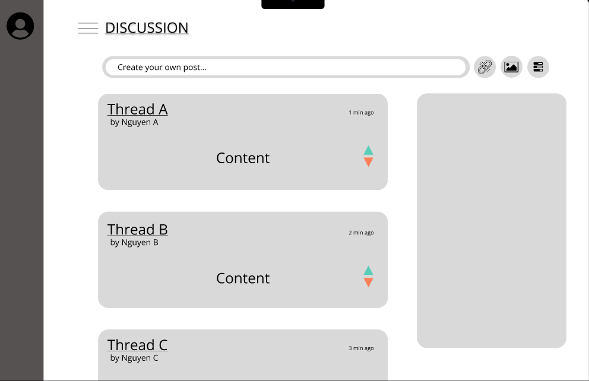
Click on “Create your own post” to post editor
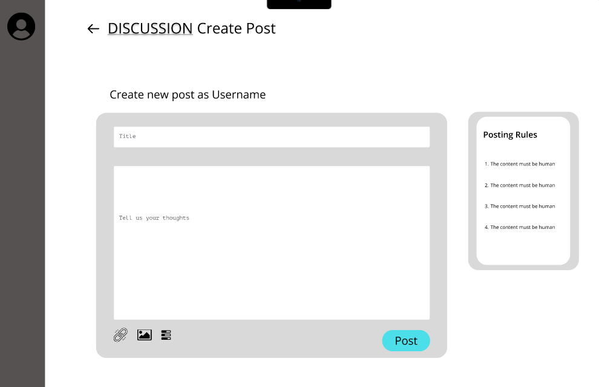
Successfully opened the post editor.
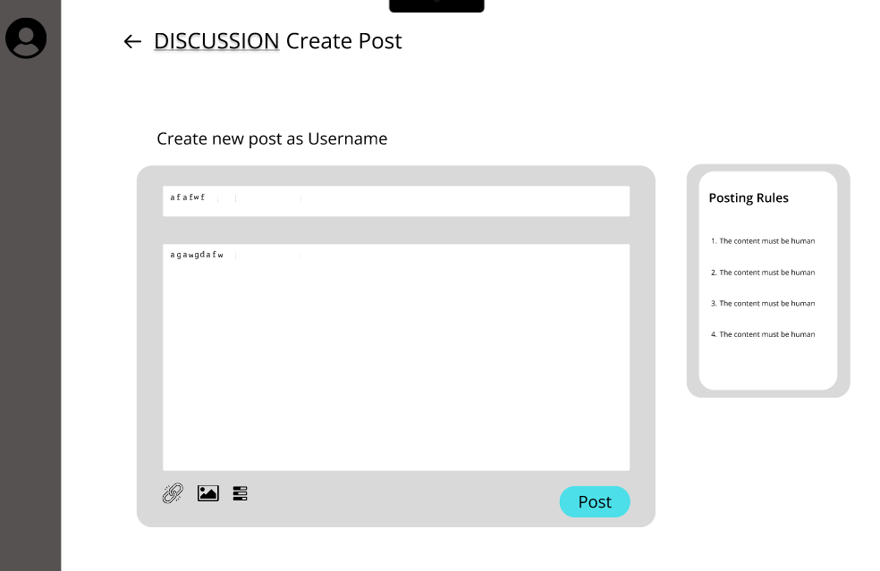
Type your content into the text box and click “Post”
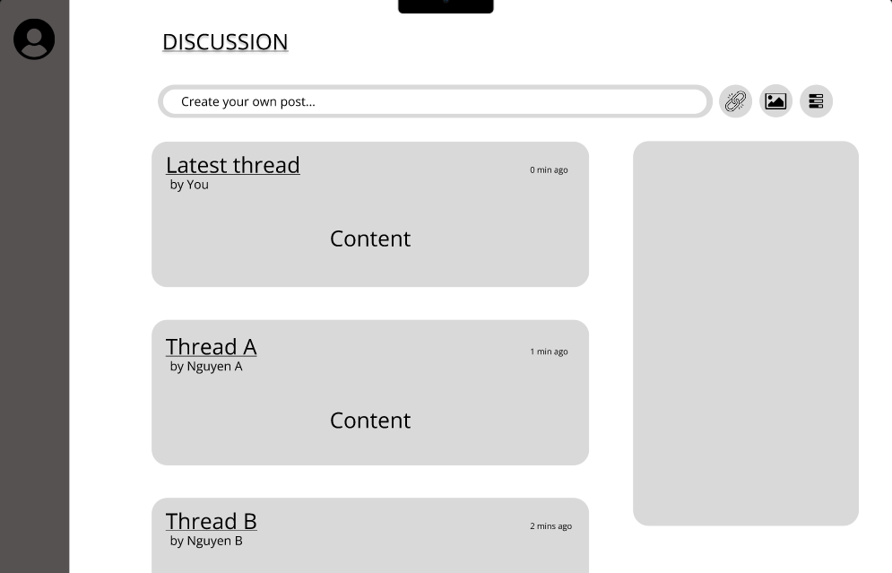
Successfully posted your own thread
Usability Testing
Tasks
Task 1: User customizable functionality (UI)
Task 2: Pop-up preview materials (UI)
Task 3: Comment functionality on study materials
Task 4: Discussion functionality (including 3 main features: View thread, Comment a thread and Post Threat)
Scripts
Feature 1
Your first task is customizing the UI in the “Settings" section.
We will use this theme for now.
Let's move on to the next task.
Your task is previewing the file by hovering the cursor over it in the module's section.
Your final task is to comment in the file's page.
Feature 2
Now let's try the other prototype. I want you to view any content of any thread.
Great, now comment on this thread.
Ok, go to the back page and then create your own thread.
Discussion Guide
A list of prompts or questions you would like to ask participants after the test.
How would you describe your overall experience using the low-fidelity prototype?
Did the low-fidelity prototype accurately represent the functionality and features you expected in the final product?
Were there any specific elements or interactions in the low-fidelity prototype that stood out to you? If so, why?
Did you encounter any difficulties or challenges while navigating through the low-fidelity prototype? If yes, please explain.
Did you encounter any difficulties or challenges while navigating through the low-fidelity prototype? If yes, please explain.
Did the low-fidelity prototype effectively communicate the intended user flow and navigation?
Were there any aspects of the low-fidelity prototype that you found confusing or unclear? If so, what were they?
Did the low-fidelity prototype meet your expectations in terms of the overall concept or idea?
Were there any features or functionalities missing from the low-fidelity prototype that you would have expected or liked to see?
How well did the low-fidelity prototype capture the visual and aesthetic direction you were expecting?
Based on your experience with the low-fidelity prototype, what improvements or changes would you suggest to enhance the user experience?
Metrics
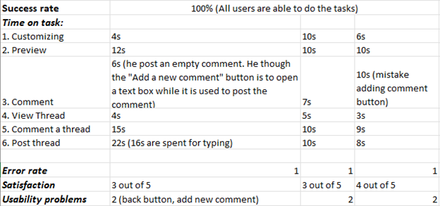
Analysis
Based on three rounds of usability testing conducted with BUV students, we have gathered valuable feedback and identified issues in our approach to developing the new LMS. This report aims to evaluate our low-fidelity prototype based on five key metrics derived from user testing, allowing us to understand its strengths and weaknesses. Furthermore, we will present a set of actionable recommendations to tackle the identified issues highlighted during our analysis.
As can be seen from the table, it is evident that the Success rate achieved a perfect score of 100%, indicating that all users who participated in the usability testing successfully completed the task. This result reflects the users' ability to navigate and interact with our new system, without encountering significant difficulties or errors. The user-customizable function was found to be user-friendly and intuitive, with all three participants able to navigate it easily and complete tasks in under 10 seconds. Moreover, there were no reported instances of errors or usability problems. These findings indicate excellent usability and a positive user experience, demonstrating that users were able to complete tasks accurately and efficiently without encountering significant errors or confusion. Our prototype also includes a pop-up preview function that displays the content of the slide when the user hovers over the link. This feature received positive feedback during the usability testing, with all participants appreciating its usefulness. Furthermore, there were no reported errors or usability problems associated with this function, which suggests decent usability and user experience.
On the other hand, the usability testing revealed some issues that need to be addressed, as indicated by the five metrics. The first problem identified was related to the Comment function. All participants were confused by the functionality of the "Add a new comment" button, mistakenly assuming that it would open a textbox for them to enter their comments. This was the only reported error during the user testing phase. The second issue exists in our new Discussion function. The reported number of Time on task metrics for three primary forum functions—View Thread, Comment a thread, and Post thread—yielded excellent results, with all participants completing the tasks within the expected timeframe. However, an issue arises when users are within a specific thread window and wish to return to the forum's homepage. There is a leftwards arrow symbol that lacks the functionality to navigate back to the homepage. Instead, users must click on the word "discussion" to return.
In order to address the identified issues and enhance the user experience of our solution, we have compiled a table of actions to be taken. Each action has been carefully considered based on the feedback and insights gathered from the usability testing and user interviews
No
Name
Problem Description
Suggested Solution
1
Problem with Ambiguous button
“Add a new comment” button (Comment function)
The "Add a new comment" button caused confusion among all participants as they mistakenly expected it to open the text box for posting their comment.
However, its actual purpose is to directly post their comment on the content.
1. Based on user feedback and testing results, iterate on the button design to make it more intuitive and clear. Consider using familiar icons or labels that accurately convey the button's purpose.
2. Make visual enhancements to the button to make it stand out and differentiate it from other elements on the interface. Use color, size, or placement strategically to draw attention and indicate its purpose.
All participants experienced confusion with the functionality of the leftwards arrow button, as they mistakenly believed it would allow them to navigate back to the homepage. However, the button serves no functional purpose and is purely visual in nature.
2
Maximizing Pop-up Preview function
Participants mentioned the challenge of differentiating between numerous materials in the Module section based solely on their titles.
We have implemented the concept of a hover-based pop-up preview that showcases the slide content when users place their cursor over the link.
In order to enhance the functionality of the feature, we recommend incorporating additional details into the pop-up preview, including the file's date, description, and learning objectives of the corresponding materials.
By incorporating these additional elements, users will have a more comprehensive understanding of the content before accessing it.
.png)